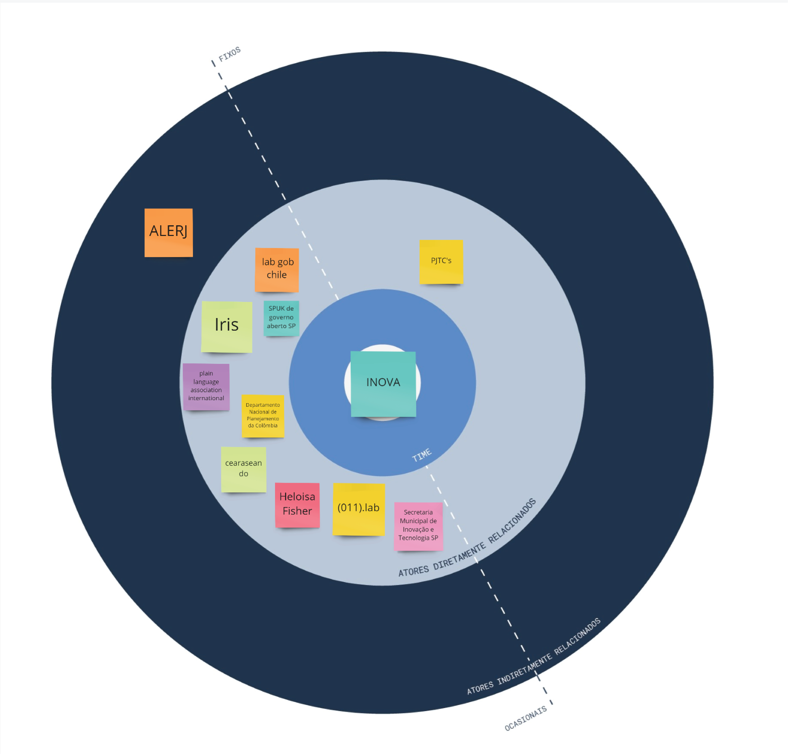
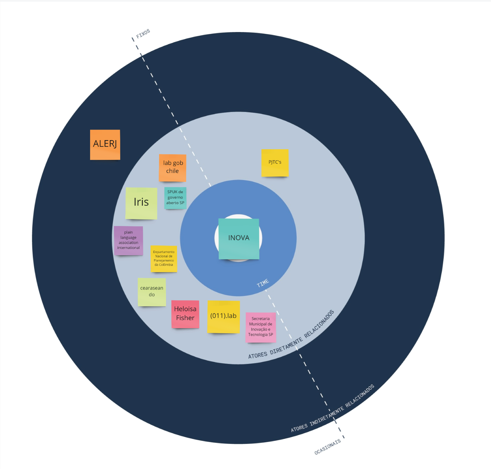

unindo inteligência artificial e simplificação de documentos públicos
simplifica
tema do desafio comunicação
tipo de demanda intervenção
proponente em definição
ciclo de trabalho08.09.2020 a 16.10.2020
A simplificação de documentos públicos ganhou destaque entre governos a partir do movimento de Linguagem Simples (Plain Language em inglês ou Lenguage Claro em espanhol). O objetivo é estimular a produção de textos que garantam a melhor compreensão da própria administração pública e da sociedade civil. Trata-se de aumentar a eficiência da gestão e de aproximar o cidadão do governo que o representa.
Em agosto de 2020, o Inova_MPRJ realizou pesquisa com 161 integrantes da instituição e 98,8% concordavam com a necessidade de melhorar a forma como o setor público e o MPRJ se comunicam. Dentre as principais mudanças 84,5% creem que é preciso reduzir tamanho; 93,8% que é relevante simplificar linguagem, e 95,7% que vale a pena utilizar recursos alternativos ao texto.
Na mesma pesquisa, o Laboratório identificou os tipos de documento cujas mudanças seriam mais urgentes. Em primeiro lugar, indicado por 39,1% dos participantes, as petições iniciais em ações civis públicas (ACP). Na sequência, Termos de Ajuste de Conduta (TAC); pareceres em processos cíveis ou criminais; e denúncias criminais.
Se peças processuais precisam maximizar seu potencial de convencimento, é intuitivo pensar que esses documentos devam ser breves. Na prática, entretanto, é extremamente comum encontrar ACPs com mais de 60 páginas.
Em alguns estados dos EUA, a aderência à padrões de formatação e número de páginas é condição mínima para validação de peças. No Brasil,em 2012, um juiz rejeitou uma petição inicial de 144 páginas.
O magistrado afirmou que, segundo a Unesco, um texto de 49 páginas ou mais é um livro; e que a grande carga de trabalho não o permitiria ler livros durante o expediente. O fato se repetiu no Rio Grande do Norte dois anos depois.
Em 2018 a 3ª PJTC da Saúde da Capital desenhou modelo funcional de ACP com até 10 páginas e espaçamento agradável para leitura. Além de reduzir o conteúdo ao essencial e delimitar a questão jurídica em debate, aumentando a chance de sucesso da tese, buscaram adotar estrutura padrão para as petições. A padronização abre espaço para o potencial da inteligência artificial na identificação de questões repetitivas e classificação automatizada de temas.
Para testar novas possibilidades e mensurar seus impactos, o Inova_MPRJ contará com a parceria do Íris, Laboratório de Inovação e Dados do Governo do Estado do Ceará e do (011).lab, Laboratório de Inovação da Prefeitura de São Paulo. O objeto será a reestruturação de ações civis públicas e partirá da experiência da 3ª PJTC de Saúde da Capital para construir um modelo replicável para todo o MPRJ.

 
